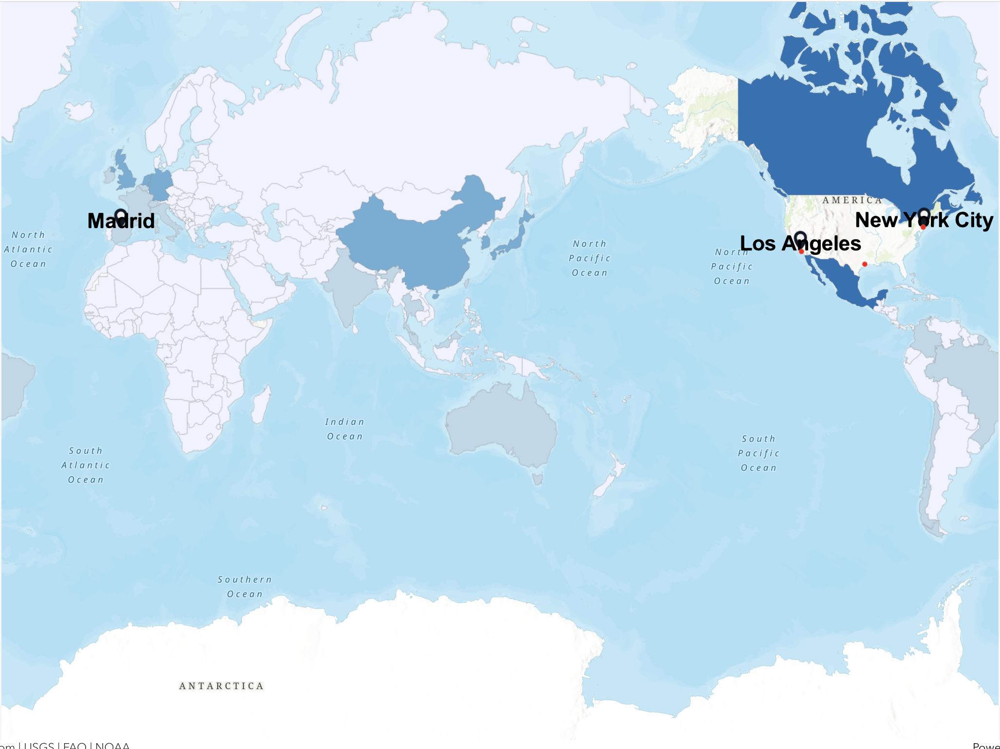

Week 08 · November 2026
From a Table to a Map
The question
I wanted to understand the digital infrastructure surrounding my New York City site: what digital and telecommunications infrastructure is nearby, which wider network the site might connect to, and whose jurisdiction governs the flows entering and leaving it?
The data
I used four sources, all accessed on 3 November 2026.
First, I accessed OpenStreetMap data through Overpass Turbo. The data was made by OpenStreetMap contributors and is licensed under the Open Database License (ODbL) 1.0. It could be republished on a public webpage provided that OpenStreetMap and its contributors are credited, the ODbL is identified, and any publicly distributed derivative database follows the share-alike requirement.
Second, I used Taginfo, OpenStreetMap’s tag-statistics service, to examine worldwide tag counts. Taginfo’s data is also licensed under the ODbL and could be publicly republished with the required OpenStreetMap attribution and licence notice.
Third, I consulted TeleGeography’s Submarine Cable Map, made by TeleGeography, to identify the Island Park and Northport cable landing points. References and screenshots of the map are available under CC BY-SA 4.0 when TeleGeography is credited, but the interactive map cannot be embedded and its underlying database is restricted to paying subscribers. I therefore manually transcribed and cited two publicly displayed coordinate pairs through Submarine Networks website rather than downloading or redistributing the database.
Finally, I referred to Data Center Map, made by Data Center Map ApS, to compare commercial data-centre listings near New York City. Its website terms do not provide a clear open-data licence or clear permission to reproduce its listings publicly. Therefore, the terms were unclear, so I linked to the source rather than reproducing its content.
Republication:
OpenStreetMap: The data is available under the Open Database License. I am “free to copy, distribute, transmit and adapt” it as long as I credit OpenStreetMap and its contributors. I may publish my map publicly with visible attribution and an ODbL link; any distributed derivative database must follow the share-alike requirement.
Overpass Turbo: Overpass returned OpenStreetMap data rather than a separately licensed infrastructure database. The exported response states that the included data is from OpenStreetMap and “is made available under ODbL.” I could republish the resulting map with the required OpenStreetMap attribution.
Taginfo: Taginfo states that “the data available through taginfo is licensed under ODbL, the same license as the OpenStreetMap data.” Its statistics may therefore be republished with OpenStreetMap attribution and identification of the ODbL.
TeleGeography Submarine Cable Map: A reference to the map or a screenshot is available under CC BY-SA 4.0, provided that TeleGeography is credited. However, the interactive map “is not an embeddable resource,” and access to the underlying database is restricted to paying subscribers. I therefore cited the map and manually transcribed two displayed coordinate pairs rather than embedding the map or redistributing its database.
Data Center Map: I could not determine a clear open licence or clear permission to reproduce its listings on my public journal. The terms are unclear, so I linked rather than reproduced.
The method
The query: I ran the telecom query first: "[out:json][timeout:60]; nwr["telecom"]({{bbox}}); out center;" The predicate ["telecom"] selected every OpenStreetMap node, way or relation carrying the telecom key, regardless of its value. The extent {{bbox}} limited the query to the area visible on my Overpass Turbo map. In words, the extent covered New York City and nearby parts of northern New Jersey and western Long Island.
I then ran the following power query: "[out:json][timeout:60];(nwr["power"="substation"]({{bbox}}); nwr["power"="tower"]({{bbox}}););out center;" This query contained two predicates: ["power"="substation"] selected mapped substations, while ["power"="tower"] selected electricity transmission towers. The parentheses combined the two results. The extent was again the visible New York City metropolitan bounding box. Both queries were answered by https://overpass-api.de/api/ on 3 November 2026.
My telecom query returned 49 mapped objects, so telecommunications infrastructure was not entirely absent from OpenStreetMap. However, these results were general objects carrying a telecom tag, not 49 identified submarine-cable landing stations. The result I saved recorded the number of objects but not all their individual names. Therefore, I cannot claim that the contributors knew each facility’s operator, function or relationship to the submarine-cable network. Where an object lacks a specific name, the contributor may have recognised only that it was telecommunications infrastructure.
The evidence

What I found
Expectation: Two of my four predictions disagreed with the evidence. I correctly predicted that I could place a screenshot of TeleGeography’s Submarine Cable Map on my public journal page, although I had not anticipated that this permission applied only to a credited screenshot under CC BY-SA 4.0—not to embedding the interactive map or redistributing its underlying database. I also correctly predicted that I could publish an OpenStreetMap-derived map, provided that I credit OpenStreetMap and its contributors and identify the ODbL licence.
Both of my numerical predictions were too high. I predicted that OpenStreetMap would contain 100 data centres in Shanghai, but the queries found four relevant records: two tagged telecom=data_center and two tagged building=data_center. I also predicted 1,000 cable landing stations worldwide, whereas Taginfo reported 60 objects tagged telecom=cable_landing_station when I checked it.
Furthermore, I expected U.S. exports to decline after the pandemic. However, exports in 2021, 2022, and 2023 were higher than in 2019. This suggests that export performance is shaped by multiple factors, including demand, commodity prices, supply-chain conditions, exchange rates, and trade relationships. No single factor can fully explain changes in national exports.
The two absences, distinguished: My telecom query returned 49 mapped objects, so telecommunications infrastructure was not entirely absent from OpenStreetMap. However, these results were general objects carrying a telecom tag, not 49 identified submarine-cable landing stations. The result I saved recorded the number of objects but not all their individual names. Therefore, I cannot claim that the contributors knew each facility’s operator, function or relationship to the submarine-cable network. Where an object lacks a specific name, the contributor may have recognised only that it was telecommunications infrastructure.
The absence of an OpenStreetMap object explicitly identifying the nearby cable landing stations does not mean that no landing stations exist. TeleGeography identifies Island Park and Northport as cable landing locations. I can conclude that these facilities were absent from, differently tagged in, or not identifiable through my OSM query. However, I am not entitled to conclude that the physical facilities themselves are absent.
Connection: The connection between the United States’ physical geography and its export basket therefore holds only partially. Agricultural land and climate help support soybean production, but the largest export category is business services, whose value is concentrated in offices and corporate networks which are less affected by climate and independent from certain regions. The export data also show that the final destination of U.S. goods does not necessarily identify where they are consumed. Mexico and Canada may function as both markets and stages in integrated North American production and distribution systems. This demonstrates how the scale and distribution of national trade data can obscure the specific places where economic value is produced, processed, and captured.
What this does not show
First, this map does not show the exact places where U.S. exports are produced. The choropleth assigns one national export value to each destination country, so it can make the entire country appear to share the same economic relationship. In reality, exports are concentrated in certain locations including farms, factories, offices, energy facilities, and ports. The three points on the map show three major ports in the US and do not represent the full transportation system.
Secondly, he map also does not show the complete value of U.S. exports. The destination table primarily represents goods trade, while the product view includes service categories such as business services. Business services were the largest category in the product view, but they cannot be represented accurately as a single physical export site. The map therefore omits important parts of the U.S. economy, especially activities concentrated in offices, financial institutions, and multinational companies.
Furthermore, The Atlas values are reconciled estimates rather than raw customs records. The numbers also do not show who receives the income from trade, where profits go, how workers are paid, or which companies control the production and distribution networks.
Ultimately, the map does not establish that one factor caused exports to rise after the pandemic. U.S. exports were higher in 2021, 2022, and 2023 than in 2019, but this change could reflect several factors, including demand, commodity prices, supply-chain conditions, exchange rates, international relations etc. The map can describe the distribution of reported export values, but it cannot identify a single cause.